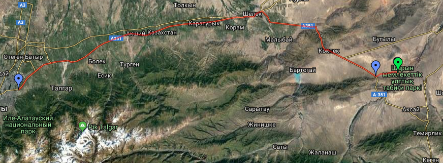

Чарынский коньон — Каньо́н Чары́н — протянувшийся на 154 км каньон вдоль реки Чарын в Казахстане. Каньон располагается в 195 км восточнее Алма-Аты, недалеко от границы с Китаем. Каньон входит в территорию Чарынского национального парка, образованного 23 февраля 2004 года. Каньон Чарын Чарынский каньон — памятник природы, сложенный из осадочных пород, возраст которых составляет около 12 миллионов лет. Высота отвесных гор каньона достигает 150—300 м. Наиболее интересным местом для туристов является так называемая Долина за́мков, длина которой составляет около 2 км, ширина — 20-80 м.В лоне каньона сохранилась роща реликтового вида ясеня, пережившего эпоху оледенения — ясеня согдийского. Другая подобная роща есть только в Северной Америке. С 1964 года Ясеневая роща объявлена памятником природы. Также огромный интерес представляет и туранговая роща — роща азиатского тополя.Ландшафтное разнообразие Чарынского каньона обуславливает многообразие флоры и фауны. Здесь произрастает более 1500 видов растений, 17 из которых занесены в Красную книгу Казахстана и 62 вида млекопитающих, 103 вида гнездящихся птиц, 25 видов рептилий.
Как добраться до Чарынского каньона из Алматы. Расстояние от Алматы до каньона составляет около 236 километров. Алматы: перейдем на ты? Из Алматы до Чарынского каньона добраться можно как на своей машине, так и арендовать автомобиль или нанять машину с водителем. Время на дорогу занимает чуть больше трех часов. Дорога на Чарынский каньон пролегает через кульджинскую трассу, по которой следует проехать на автомобиле 110 км до развилки Шелек (Чилик). Следом необходимо повернуть направо. Через 165 километров появится очередная развилка, на которой снова нужно свернуть направо. Через 23 километра после поселка Кокпек повернуть налево. На дороге появится указатель "Чарынский каньон".Для того чтобы спуститься ущелье, необходимо пересесть на внедорожники. Легковой автомобиль для такого спуска не подходит. Путешественники советуют преодолеть дорогу вниз пешком, так как для машины процесс спуска и подъема будет довольно проблематичным.
